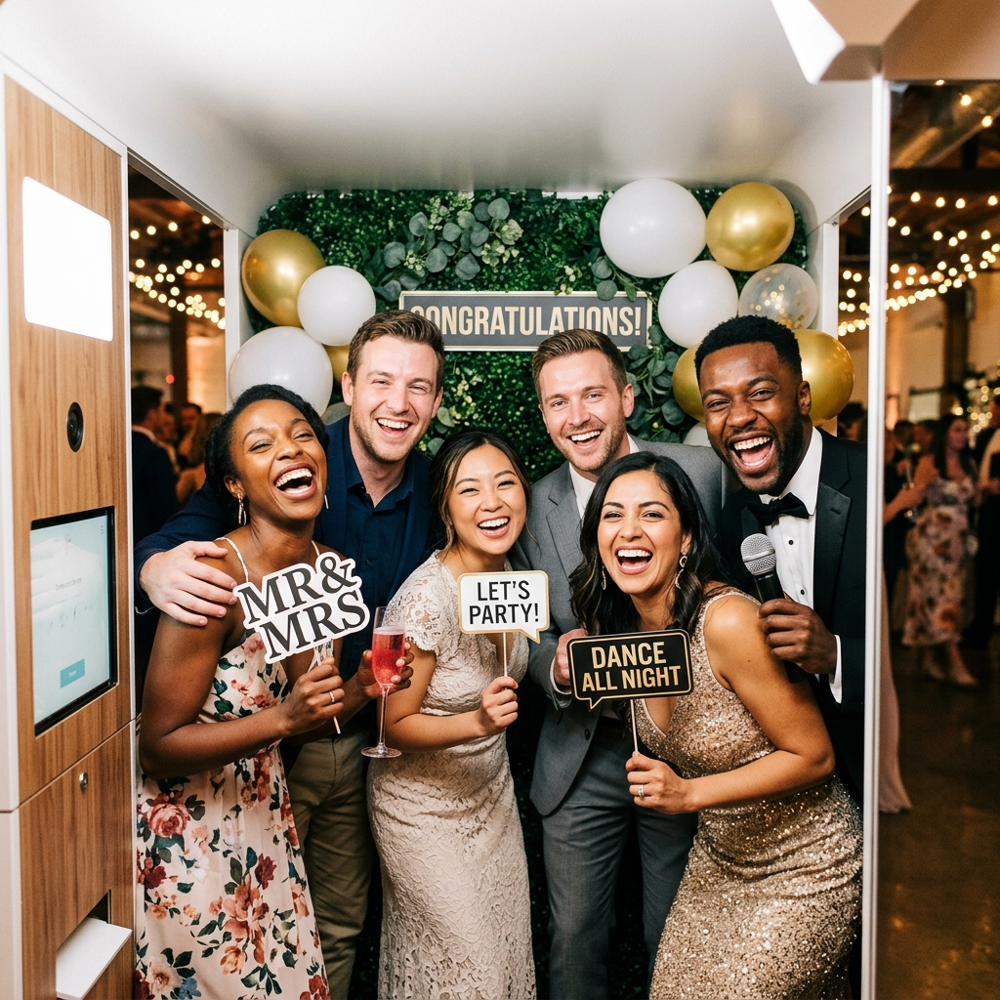
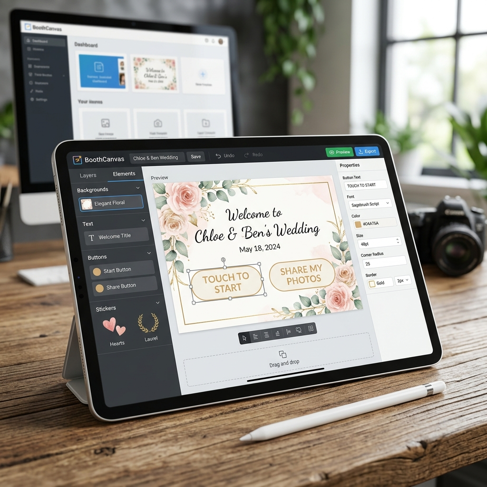
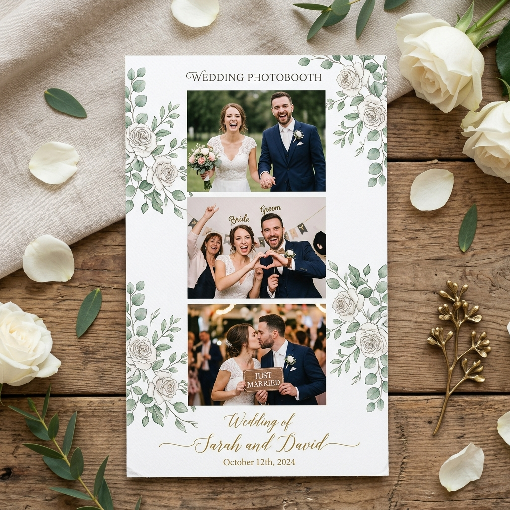
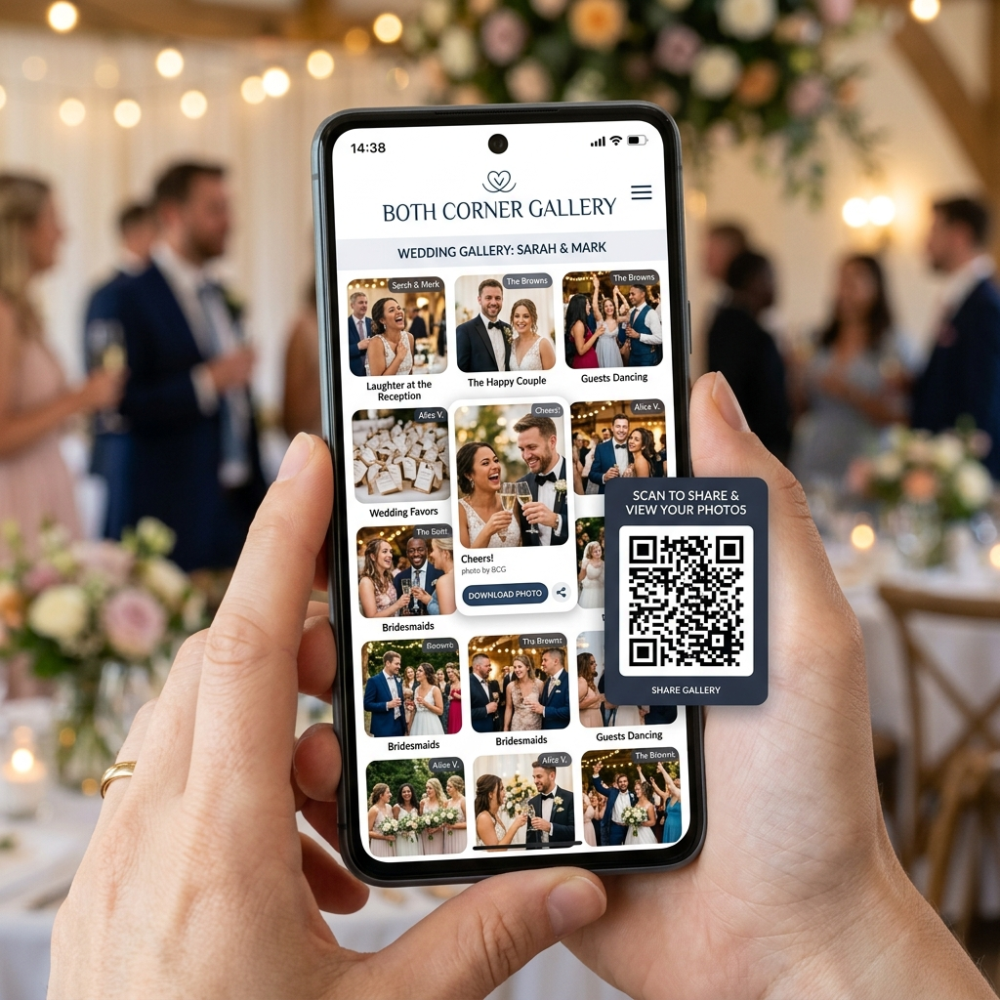

Jalankan photobooth interaktif langsung dari tablet Android atau PC Windows Anda. Kompatibel dengan kamera DSLR Canon/Nikon/Sony, GoPro, dan Webcam. Konfigurasi seluruh event secara instan dari cloud.

Ambil foto, GIF animasi, video boomerang, 360 slow-motion, dan video guestbook berkualitas tinggi menggunakan aplikasi client Windows PC atau tablet Android Anda.
Bentuk pengalaman photobooth yang khas untuk setiap event. Kustomisasi welcome screen, pilihan font, warna tema aplikasi, template layout cetak, hingga background foto.
Bagikan hasil secara instan lewat Email, SMS, WhatsApp, QR code, atau cetak fisik kertas berbagai ukuran (strip 2x6, postcard 4x6) secara otomatis dengan printer foto.
Pilih mode operasional terbaik yang sesuai dengan konsep event dan keinginan klien Anda.
Berikan tamu Anda kulit yang tampak sempurna secara instan menggunakan filter penghalus wajah kustom dan mode hitam-putih kontras tinggi yang menawan.
Pindahkan tamu Anda ke mana saja di seluruh dunia. Ganti latar belakang foto secara real-time dengan bantuan green screen fisik atau teknologi AI background removal.
Pandu tamu sepanjang sesi foto menggunakan animasi petunjuk visual interaktif pada cermin, suara pemandu, serta hitung mundur kustom.
Ubah photobooth Anda menjadi mesin penghasil profit otomatis. Integrasikan pembayaran non-tunai (QRIS/Card) tanpa perangkat keras tambahan yang rumit.
Buat dan cetak kode voucher unik secara instan dari dashboard untuk memberikan sesi foto bagi tamu secara terbatas atau berbayar via kasir offline.
Tamu cukup memindai barcode unik yang tercetak pada kertas foto fisik untuk langsung mengunduh file digital resolusi tinggi mereka dari cloud storage.
Hubungkan dan kendalikan beberapa perangkat sharing station, printer server, dan kamera tambahan secara nirkabel dalam satu jaringan lokal yang stabil.
Terapkan branding visual usaha Anda secara menyeluruh pada aplikasi. Mulai dari watermark foto, email custom sender, domain website kustom, hingga logo startup screen.
Sesuaikan tampilan visual software untuk menciptakan pengalaman bermerek yang mendalam.
Desain seluruh layar yang dilihat oleh tamu Anda saat mendekati booth. Atur font teks kustom, paduan warna tema, gambar latar belakang (*background*), hingga pemutaran video promosi melingkar (*looping video*) untuk menarik perhatian tamu.
Anda juga dapat menaruh kotak *live preview camera* di layar utama agar tamu bisa langsung menyesuaikan posisi pose mereka sebelum hitung mundur dimulai.

Buat template tata letak cetak photostrip 2x6 inci atau postcard 4x6 inci yang berisi 1 hingga 4 pose foto. Gunakan editor tata letak cloud drag-and-drop kami untuk meletakkan kotak foto, teks nama event, serta logo sponsor dengan sangat presisi.
Template cetak dapat diunggah dengan file overlay `.png` transparan buatan desainer Anda untuk branding acara korporat kelas atas.

Setiap foto, GIF, dan video yang diambil di lapangan akan langsung masuk ke Cloud Gallery milik Anda. Tamu dapat memindai QR Code pasca foto untuk diarahkan ke halaman web galeri khusus event tersebut.
Kustomisasi galeri digital Anda dengan logo bisnis, domain kustom, tautan media sosial, serta sematkan (*embed*) galeri tersebut langsung di website Anda untuk kebutuhan SEO marketing.

Manajemen photobooth berbasis cloud untuk menghemat waktu penyiapan lapangan.
Login ke dashboard Both Corner Cloud dari laptop Anda. Siapkan event, kustomisasi tombol welcome screen, dan unggah template print layout.
Buka aplikasi client Both Corner di Windows PC atau tablet Android Anda di lokasi event. Seluruh konfigurasi cloud Anda akan langsung termuat secara instan.
Biarkan para tamu berfoto ria. Foto dicetak secara otomatis dan file digital langsung terunggah ke galeri cloud siap unduh.
Unduh versi gratis trial aplikasi photobooth untuk perangkat keras yang Anda gunakan di lapangan.